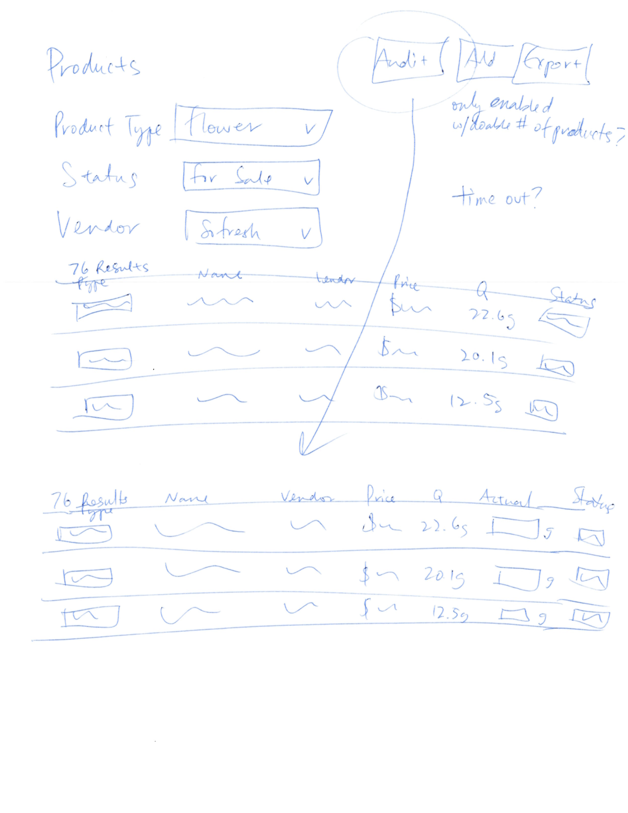
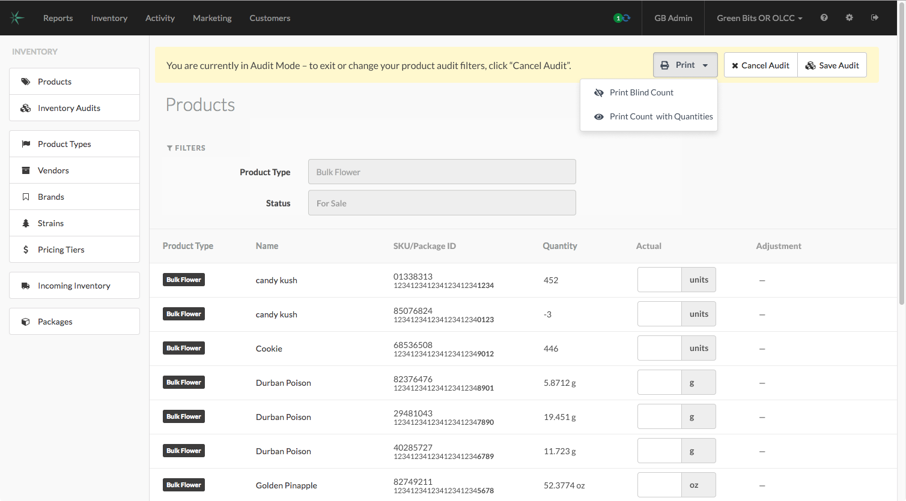

Green Bits Quick Audit Tool, 2019
Skills
- Design studio facilitation
- Usability testing
- UX design
Tools
- Miro
- Sketch
- InVision
Artifacts
- Product guide
- Clickable prototypes
- Live product :)
Problem
One of our most common customer complaints was how time consuming and difficult to use our current inventory auditing process was. It involved switching the register scanner to a different mode, scanning products into a spreadsheet, cleaning up the spreadsheet, and uploading the spreadsheet to our system. Because this process was so onerous and error-prone, customers weren’t auditing as often as best practices (and state regulations) recommend.
Solution
I researched the problem, including bringing together competitor solutions and finding related customer feedback in Jira and Confluence in a Miro board. Then, I organized and led a multi-day design sprint to involve subject matter experts and stakeholders in understanding the problem and solution ideation.

During this process, I sketched a “quick audit” tool that would enable customers to start an audit from the inventory list page they already used constantly. While it didn’t earn the most votes during the design sprint, I felt strongly that it could solve several problems for our customers. I created a clickable prototype in InVision, got positive feedback from internal team members, iterated, and started showing it to customers.

2Customers who used the prototype said "it's a 10 out of 10” and “I love it – I know exactly what each SKUs quantity is. That's hugely beneficial to me."
Once I was able to show video of customers interacting with the prototype positively, I worked closely with the product manager to get this project on the roadmap, write stories, and get them pointed as part of an iterative sprint process.
Result
The product manager recruited beta testers to use the first version of quick audits, and I continued usability testing and following up with customers to refine the workflow, find edge cases, and add additional “must have” features.
Now that quick auditing has rolled out to all of our customers, the reaction has been overwhelmingly positive. Nearly 28% of our customers have submitted an audit using the new tool, up from 5% using the old tool, increasing compliance with state regulations. This has put us a step above other companies in a competitive marketplace.
